0x00 导航
鉴于 AI 绘画的知识点较多，限于篇幅及便于分类组织，我会以一个系列文章的形式记录：
- 系列 01：《AI 绘画原理与工具》
- 系列 02：《AI 绘画模型扫盲》
- 系列 03：《AI 绘画模型推荐》
- 系列 04：《文生图：不会念咒的炼丹师不是一个好画家》
- 系列 05：《图生图：突破次元圈限制》
- 系列 06：《高清修复：轻松拥有 24K 钛合金画质》
- 系列 07：《提示词进阶：渐变|交替|混合》
- 系列 08：《LoRA 专题：五大应用场景》
- 系列 09：《LoRA 训练：不会炼丹的魔法师不是一个好画家》
- 系列 10：《ControlNet: 姿态控制》
- 系列 11：《ControlNet 进阶：打造炫酷的艺术字和二维码》
- 系列 12：《AI 动画初探：整个宇宙为你而闪烁》
你当前正在阅读的是系列 05《图生图：突破次元圈限制》
0x10 缘起：赛博 Coser 事件
AI 绘画第一次大规模破圈源于早前科技博主 “勘云工造” 使用 AI 技术创作的一系列作品。
他训练的 “赛博 Coser” 在国内社交媒体上引起了热烈讨论，甚至在日本也引起了热议，使得 AI 绘画的相关话题再次登上了热搜。
“赛博” 是什么意思？
“赛博” 音译自 Cyber，是 Cybernetics 一词的简略，意为 “控制论”。
这门学科在日语/韩语中有个更形象的别称，叫做「人工頭脳学/인공두뇌학」，旨在研究人（以及其它动物）和机器如何相互控制和通信，与信息论、系统论共同构成了现代信息技术的理论基础。
一个比较知名的应用是 “赛博朋克/Cyberpunk” 作品：肉体和机械、人脑和电脑之间可能有各种连接形式，有机生命和人工智能之间的界限也变得很模糊。
故而 “赛博” 可以理解为 “人工智能”， “赛博画手” 也就是 “人工智能画手” 或者 “AI 画手”。 同理，“赛博 Coser” 也就是 “AI Coser” 的意思了。
相信在你接触 AI 绘画之前，一定已经看过像 this、this & this 堪比真人的 “赛博 Coser” ：
当初那种让你 “眼前一亮”、 “惊艳” 的感觉，是否还有那么一丝丝跃跃欲试的好奇呢？
那么，「这些老婆们是怎么画出来的？」
0x20 图生图
所谓的图生图，就是把一张照片用另一种完全不同的方法画出来的过程。
借助它，我们可以轻松实现 “转绘”：不光可以让三次元的人或物变成游戏动漫里的角色，还可以让二次元里的人物来到三次元中。
其实早在第一节的所演示的用二次元的方式重绘莱娜图，就是通过图生图画出来的。
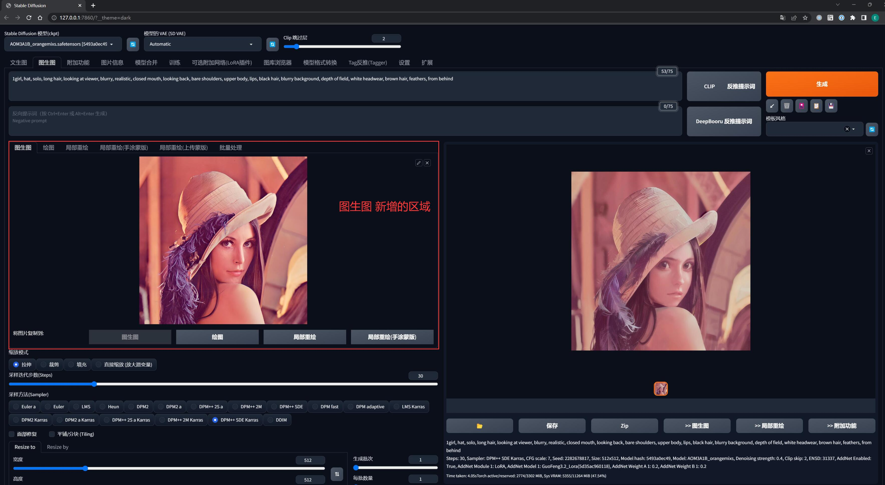
在上一节的文生图中，我们已经详细解释了各个出图参数的用途，而实际上 图生图 和 文生图 的出图参数是基本一样的，区别在于 图生图 多了一个图片输入区域，这个区域其实也是一个 Prompt，只不过是图片罢了。
相较于文字形式的 Prompt，图片形式的 Prompt 相当于给作画的 AI 发了一张参考图，在某些程度上可以更直接地跟 AI 反映出我们的意图，告诉 AI “我想要的感觉是这样的”。
另外新增的就是「重绘幅度」，表示你希望画出来的图和你给出的参考图相似的程度。
重绘幅度越高，出来的图片越不像，一般在 0.5 - 0.7 之间比较稳定。
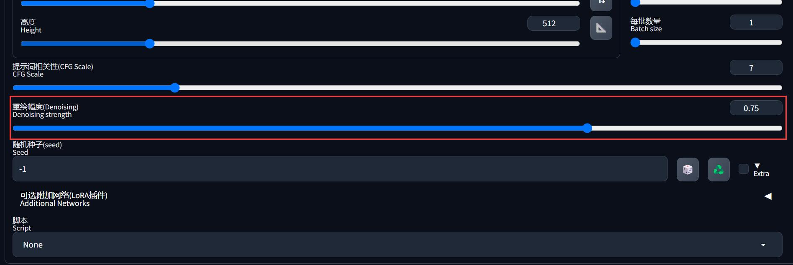
还有需要注意的是，出图分辨率默认是和导入的参考图一样的，但是如果参考图分辨率太高，肯定会爆显存。
所以需要手动设置成在你显卡能承受范围内的、和参考图相同的宽高比尺寸，有两种方法：
- 使用「Resize by」进行等比例缩放
- 使用 Photoshop 等软件先处理参考图的分辨率再导入
宽高比不一样，生成的图片会扭曲
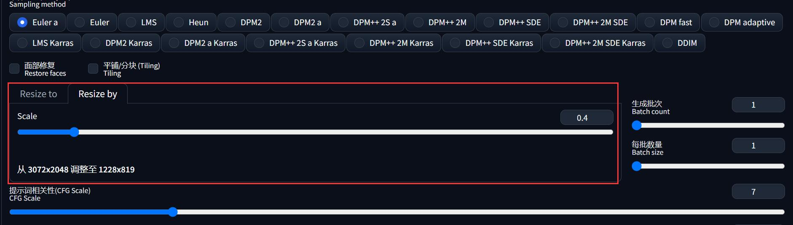
0x30 万物皆可二次元
那么，如何利用图生图把真实世界的事物二次元化呢 ？
这里以我家的猫为例，我希望画出她的二次元拟人化形象：
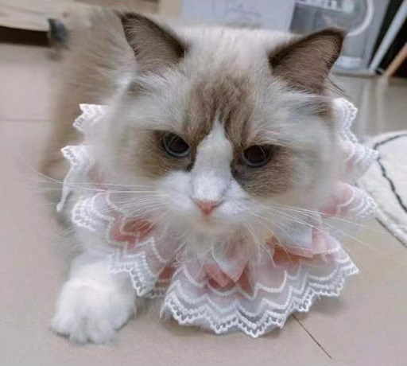
这里先声明一下，图生图虽然有参考图，但也是需要写 Prompt 的，不然 AI 就会随意发挥。
但是图生图有一个技巧可以自动生成任意图片的 Prompt 的：
- 切换到「Tag反推」
- 导入参考图，点击「开始反推」
- 反推完成后，就会生成一组当前图片的 Prompt
- 点击「>> 图生图」就可以把 Prompt 一键带过去了
记得回来点击「卸载显存反推模型」，不然会一直占用显存
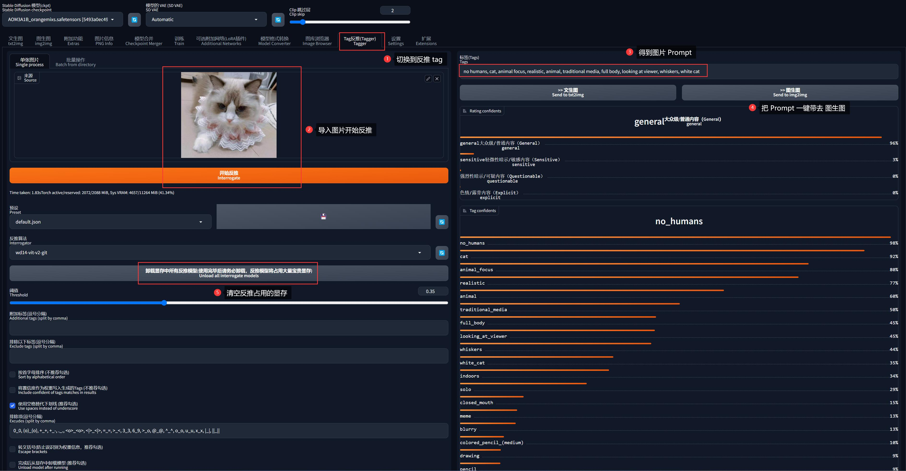
这里生成的 Prompt 为：
no humans, cat, animal focus, animal, realistic, traditional media, full body, looking at viewer, whiskers, white cat由于我是拟人化、而不是画猫，因此需要把 Prompt 修改一下：
- 去掉动物的提示词:
no humans, cat, animal focus, animal, white cat - 添加拟人的提示词:
1girl, cat ears - 添加人物动作提示词，使其贴近参考图的姿态:
lying, bed - 添加二次元画风相关的提示词:
comic, illustration - 添加在文生图中提及的 “画面提示词” 和 “反向提示词”
最终调整为这组提示词：
1girl, cat ears, whiskers, lying, bed,
looking at viewer,
comic, illustration,
(Realistic painting style:1.0), masterpiece, best quality, absurdres, 参考本系列的《AI 绘画模型推荐》，从中选择一个二次元模型（这里选择了鲸鱼座 Cetus-Mix 模型）。
导入参考图、设置适合自己显卡的分辨率和重绘幅度，点击生成按钮：
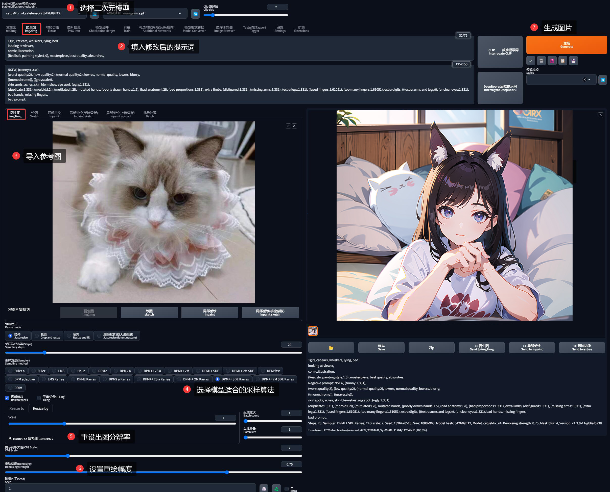
有了前面的基础，一切都变得很简单不是吗？这就是我家猫的二次元拟人形象：
0x40 万物亦可三次元
AI 既然可以把事物二次元化，那么肯定也可以三次元化。这里直接使用刚刚生成的二次元猫娘进行演示。
选择偏真实系模型（我这里选择了 ChilloutMix），生成真人时最好勾选面部修复。
然后需要修改提示词，把关于二次元画风的提示词 comic, illustration 改成写实画风的提示词 realistic 加以约束。
同时为了使得产出的人物更符合东方审美，我还在提示词里面追加了「东方混血模特」+「Lolita 服饰」等多个 LoRA 模型：
其实这里不追加 LoRA 也是可以的，关于 LoRA 模型的用法，下面结合绘制 “赛博 Coser” 再展开，这里先买个关子
1girl, cat ears, whiskers, lying, bed,
looking at viewer,
realistic,
(Realistic painting style:1.0), masterpiece, best quality, absurdres,
<lora:xiaoshazi:0.4>, <lora:koreanDollLikeness:0.4>, <lora:taiwanDollLikeness_v20:0.3>, <lora:lolitaFashionDress_floral_style3:0.5>,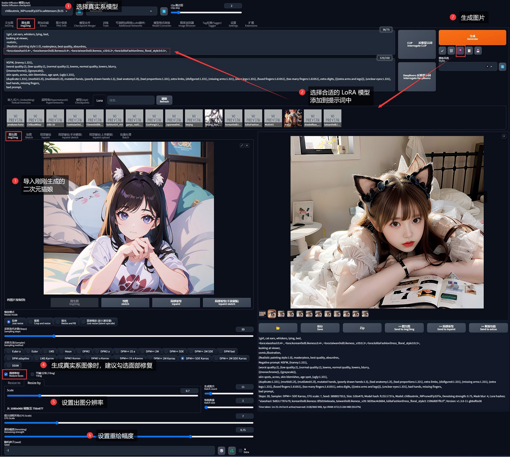
最终我为我家的猫打造了一个三次元拟人形象、让她真正地走出了屏幕：
0x50 局部重绘
很多时候我们对生成的图片 99% 都非常满意，就唯独那 1% 不满意，尤其是四肢混乱关节错位的问题尤为常见。
那这个时候我们只能忍痛重绘一张了吗？但是重绘又有可能大幅度改变图片的内容，应该怎么办呢？
SD 的「局部重绘」的功能就是专门为了解决这个问题而存在的。它就像我们写作业时使用的涂改液一样，可以针对一张大图里的某一个区域覆盖重画，既能修正错误、又不至于撕掉重画一遍。
例如我现在希望前面生成的猫娘把眼睛闭上，就可以这么做：
首先在图像输出区下方找到「>> 局部重绘」，快速把当前生成的图片送到「图生图」的子功能「局部重绘」工作区里面。
用这种方式会把上一次生成图像的参数直接全部带过去填好，非常方便
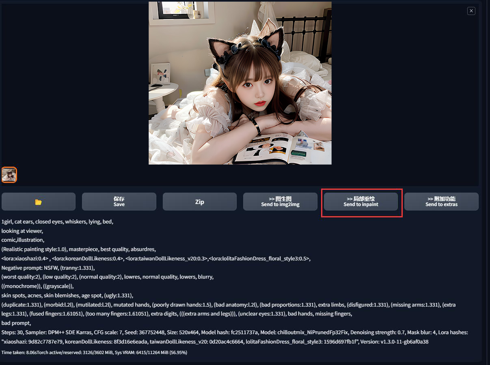
在「局部重绘」工作区可以用鼠标对任意位置进行涂抹，称之为 “蒙版”。
蒙版是一个图像处理领域的专业名字，它泛指一些用以限定处理区域的范围对象。字面意义上理解，就是一个蒙住了某些关键区域的板子，在这里我们画笔涂出来的黑色区域也就是一个这样的蒙版。
我们现在希望猫娘闭上眼睛，则先在眼睛区域涂抹，区域可以稍微涂大一些没关系（如果画错了，右上角可以调节笔触大小、回退或清除蒙版）。
然后在提示词中加上 closed eyes （如果重绘没效果，可以加大提示词的权重）
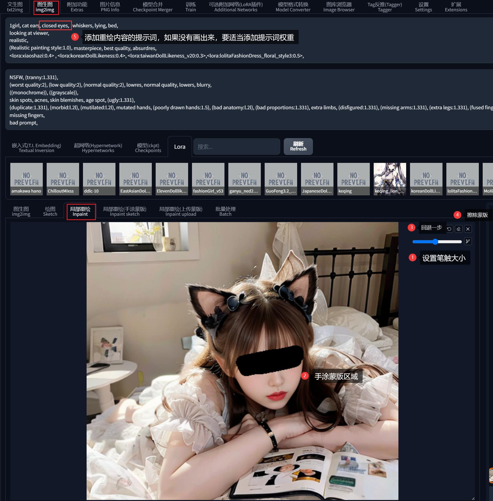
不难注意到，「局部重绘」时，下面多了一块用于设置蒙版的参数：
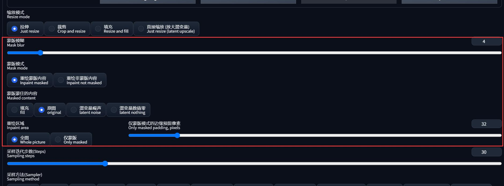
这里逐个参数解释一下：
- 重绘蒙版模式：
- 重绘蒙版内容： 重绘涂黑的部分
- 重绘非蒙版内容： 重绘没有涂黑的部分
- 蒙版蒙住的内容：指 AI 在重绘时所能 “看到” 的信息
- 原图： 能看全图
- 填充： 只能看到蒙版内容
- 潜变量噪声： 只能看到蒙版内容，而且在那基础上添加噪声
- 潜变量数值零： 只能看到蒙版内容，而且把噪声置零
- 重绘区域：
- 全图： 整张图重新画一遍，最后只保留画出来的蒙版区域拼回去替换
- 仅蒙版： 把蒙版区域当成完整的图像进行重绘，再把结果拼回去（无法读取原图全貌，经常会变得奇怪）
- 边缘预留像素： 仅蒙版 模式下有效，重绘内容边缘有多少像素和原图重叠，可以起到缓冲带作用使得过渡更自然
- 蒙版模糊： 类似 Photoshop 的边缘 “羽化模糊” 效果。值越低、其重绘的图和原本的图会有明显的交界；值越高、重绘越自然柔和
其实各个参数没有好坏之分，还是要看具体场景去使用才能知道是否适合。但是刚入门时，默认配置基本可以满足很多场景了。
现在直接使用默认的选项重绘眼睛。经过几次重试之后… 看，她现在把眼睛闭上了：
0x60 局部重绘（Sketch）
尽管局部重绘可以圈定一小块用于重新生成的区域，但它还是不够强大。
虽然重绘区域被精准的限制住了，但重新生成的过程仍然充满了不确定性，AI 既然能给你画坏一次，那它就有信心给你画坏两次三次无数次。
「局部重绘（Sketch）」就是为解决这个问题而生，它可以增强局部重绘的可塑造性从而轻松解决这个问题。
在局部重绘的绘图区域下方，有一个「局部重绘（Sketch）」的按钮，点击后可以直接把当前图片发送到 Sketch 模式。
在 Sketch 下，右上角多了一个调色盘按钮，现在我们给前一步生成的猫娘画上一个「带心形的红色口罩」。
同时加上对应的提示词 (red face mask with heart sign:1.3)，设置重绘幅度在 0.6 - 0.8 之间，重绘图片：
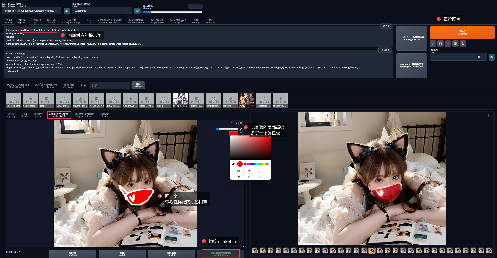
到这里你应该意识到了，这些画上去的有颜色的线条会同时构成这个画面的一部分，并参与到图生图的过程里。
这就是 Sketch 的威力所在了，它可以传递绘画内容！
0x70 绘制属于你的 “赛博 Coser”
总结一下前面「图生图」的基本使用技巧：
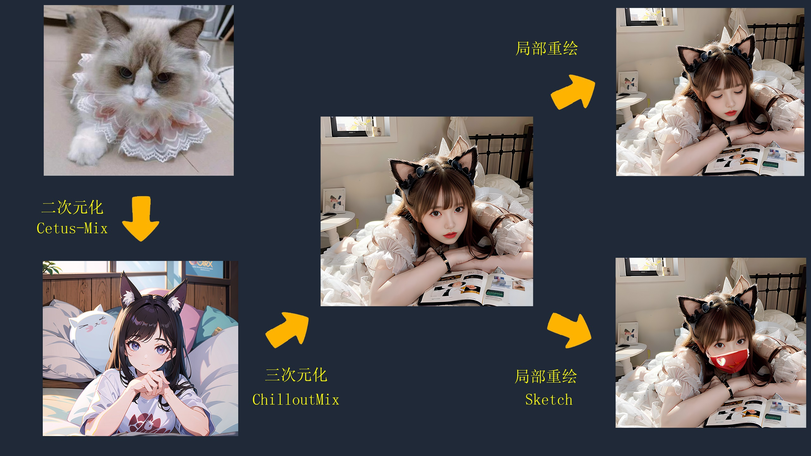
你现在是不是对怎么绘制 “赛博 Coser” 胸有成竹，开始跃跃欲试了呢？
别急，还记得我前面卖的一个小关子吗？
没错，你现在距离 “赛博 Coser” 只差一个 LoRA 了 ~
0x71 LoRA 是什么
在前面第二节给大家介绍了很多模型，而 LoRA 应该是入门 AI 绘画之后，除了大模型之外第一个接触的、也是最泛用的模型。
由于 LoRA 训练门槛比较低，于是便有大量的人参与到 LoRA 的模型训练当中去，导致现在各种的模型网站上不断涌现着由众多爱好者们训练出来的人气游戏/动漫角色 LoRA 模型，这也为我们创造 “赛博 Coser” 提供了捷径。
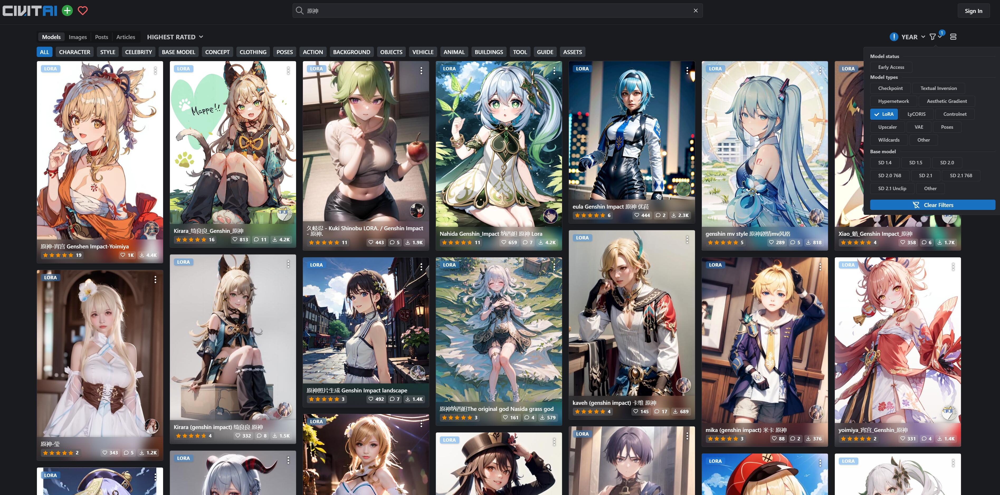
LoRA 需要和大模型搭配一起使用，它是作为大模型的微调的一个存在。
有一个比喻是，大模型是一本字典，Lora 就是字典中的一张小夹页，它上面书写着字典中一些特定内容的读书笔记。字典本身的内容不会被夹页改变，但夹页却可以在字典之外向 AI 提供笔记上的衍生信息。
在这张夹页上可能记录了：
- 对特定人物形象的描绘
- 对视觉艺术风格的实现
- 某种特定元素，如服饰、姿势等
简单来说，LoRA 的实用意义在于 固定特定人物角色特征，它把这些特征信息组合在一张小夹页上，使用时只要在提示词中呼唤这些小夹页的名称（触发词），即可把这些特征信息快速调取出来。
在 C 站 上大多的 LoRA 都记录了它所依赖的大模型和触发词：
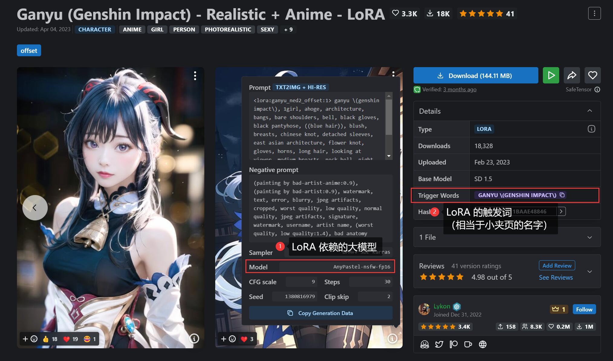
0x72 加载 LoRA 模型
下载 LoRA 模型后，将其放到目录 ${NovelAI}/models/LoRA 下便可。
有两种方法可以加载 LoRA 模型，二选一即可。
方法一，使用原生的「附加网络」功能，通过提示词指定 LoRA 模型，格式为 <lora:模型名称:权重>：
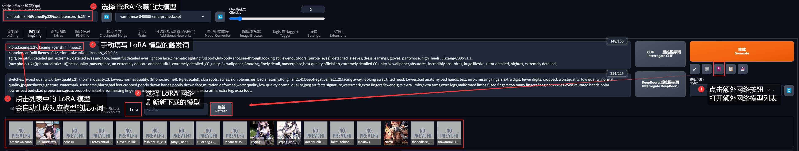
方法二，安装插件 sd-webui-additional-networks，在出图参数区域会新增「可选附加网络(LoRA插件)」，展开后可以填写 LoRA 模型信息：
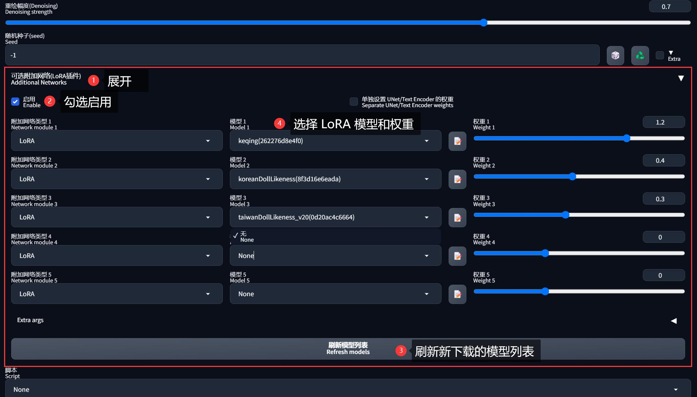
方法一适用于分享图片，但是当加载 LoRA 模型较多时，提示词可能会很长。
方法二不会把 <lora:模型名称:权重> 写到提示词中，但是目前最多只能加载 5 个 LoRA 模型，而且对分享图片不友好，因为图片参数中不会记录 LoRA 信息，别人无法复现图片。
但无论使用哪个方法，都必须把触发词 Trigger Words 写到正向提示词中（LoRA 模型的介绍页上会标明触发词），不然无法使其生效。
0x73 使用 LoRA
现在的你已经具备创造自己的 “赛博 Coser” 的能力了。
我在网上找到了这张二次元的 刻晴 人物卡，就用它来做参考图吧：
最便捷的方式为 ：
- 在 C 站 找到 原神-刻晴 的真实系 LoRA
- 该 LoRA 依赖的真实系模型是 ChilloutMix，触发词是
keqing_(genshin_impact) - 为了使生成的人物更符合东方审美，再混合使用了 KoreanDollLikeness 和 TaiwanDollLikeness 两个 LoRA 模型
- 添加一些控制画面质量的提示词
- 最终提示词为（虽没强制，但触发词建议挨着提示词）：
<lora:keqing:1.2>, keqing_(genshin_impact),
<lora:koreanDollLikeness:0.4>, <lora:taiwanDollLikeness_v20:0.3>,
1girl, beautiful detailed girl, extremely detailed eyes and face, beautiful detailed eyes,light on face,cinematic lighting,full body,full-body shot,see-through,looking at viewer,outdoors,(purple_eyes), detached_sleeves, dress, earrings, gloves, pantyhose, high_heels, ulzzang-6500-v1.1,
(raw photo:1.2),((photorealistic:1.4))best quality ,masterpiece, an extremely delicate and beautiful, extremely detailed ,CG ,unity ,8k wallpaper, Amazing, finely detail, masterpiece,best quality,official art,extremely detailed CG unity 8k wallpaper,absurdres, incredibly absurdres, huge filesize, ultra-detailed, highres, extremely detailed,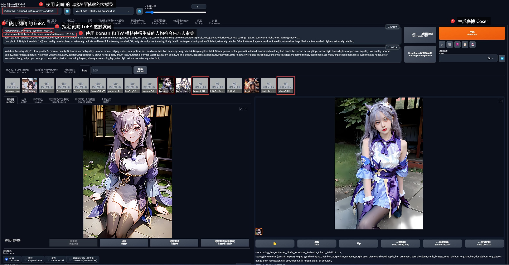
绘制结果 ：
是不是很简单呢？
但这只是最基础的方法，针对细节部分还需要做更多的微调，诸如更换背景、调节场景光线、增加服饰材质纹理等等，让图像看起来更有真实感。而需要的只有你热情和耐心。
更进阶的玩法是通过 ControlNet 让她以各种姿态动起来，你甚至可以为她配上原音，这些都将会在后面的系列中为你一一展开。
有时我们可能找不到想要的二次元角色的 LoRA 模型，这时候可以自己训练模型。训练方法先不展开，在本系列的《LoRA 训练：不会炼丹的魔法师不是一个好画家》会通过专题形式详细说明。